Na náš první den v Londýně jsme si naplánovali okruh po pravděpodobně nejslavnějších místních památkách. Nejprve jsme metrem zamířili na Picadilly Circus s populární soškou Erose. Okolí fontánky mi sice přišlo poněkud špinavé a zaplivané, ale jinak mě atmosféra místa nadchnula - obrázek, který se nám naskytnul, byl prostě jako vystřižený z učebnice angličtiny pro střední školy :D! Navíc všude kolem projížděl jeden doubledecker za druhým.
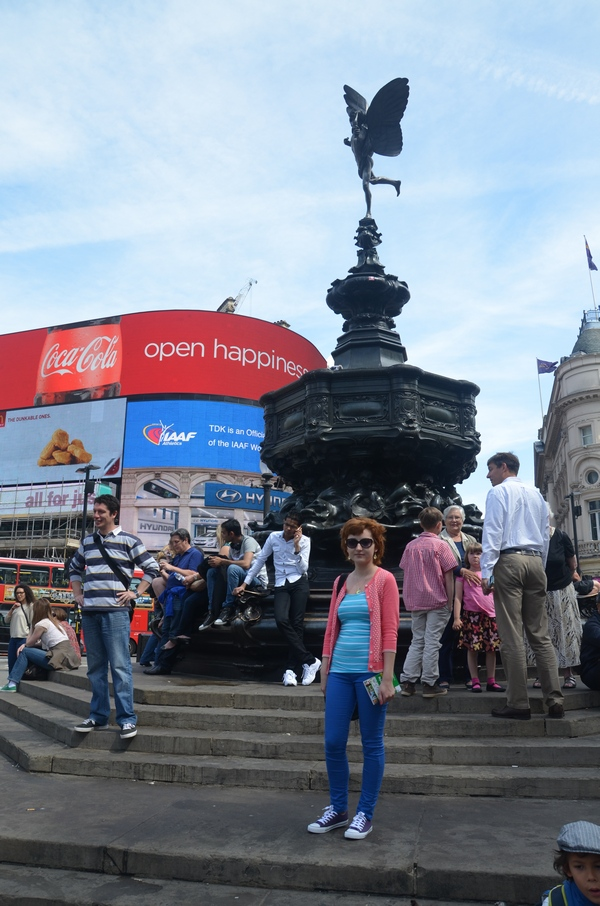
Picadilly Circus
Z náměstí Picadilly jsme se pomalu vydali po Regent Street směrem k National Gallery, do níž jsme jen krátce nahlédli, ale nechtěli jsme se příliš zdržovat v interiéru, když bylo venku tak hezky.
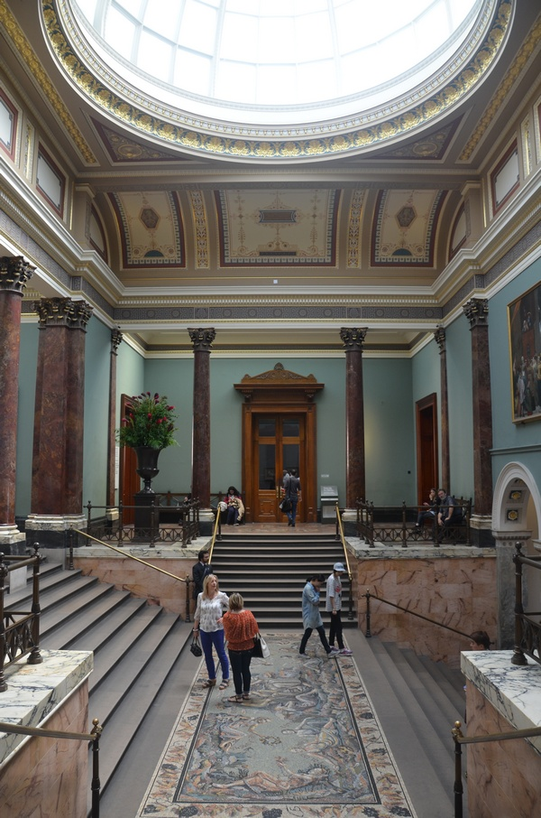
V National Gallery
Pokračovali jsme tedy až na Trafalgar Square, kde tou dobou uklízeli pozůstatky nějakého festivalu. Z toho důvodu nemáme zrovna dvakrát výstavní fotky tohoto jinak jistě překrásného náměstí. Ujistili jsme se, že zde skutečně stojí admirál Nelson, a vydali se po reprezentativní třídě The Mall, směřující přímo k Buckinghamskému paláci.
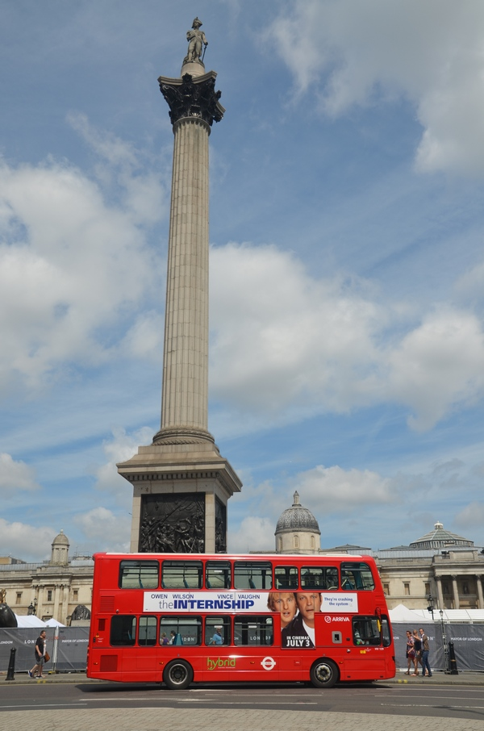
Trafalgar Square
The Mall lemuje St. James’s Park. Pohled do svěží zeleně mě zlákal a navíc to vypadalo, že výměnu stráží už stejně nestihneme (podle průvodce měla začínat v 11 a blížilo se už poledne), rozhodli jsme se tedy na chvíli zakempit na lehátkách v parku.
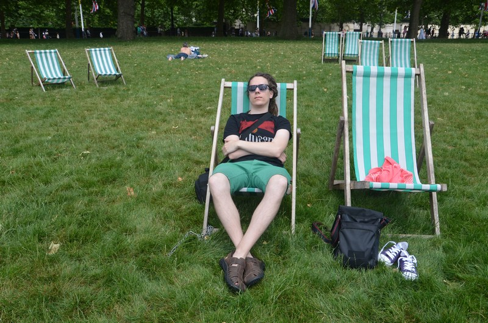
Odpočinek v St. James’s Parku
Když jsme se o něco později zvedli a vrátili se z parku zpět na The Mall, všimli jsme si, že všichni turisté se najednou ze silnice stáhnuli k jejímu okraji a úplně vepředu u Buckinghamského paláce řídí situaci londýnská policie. Zvědavě jsme si tedy stoupli na okraj chodníku a čekali, co se bude dít. Doufala jsem, že okolo třeba projede nějaký člen Royal family :D. Tolik štěstí jsme sice neměli, ale podařilo se nám nakonec stihnout onu výměnu stráží, o které jsme si mysleli, že už je dávno po ní.
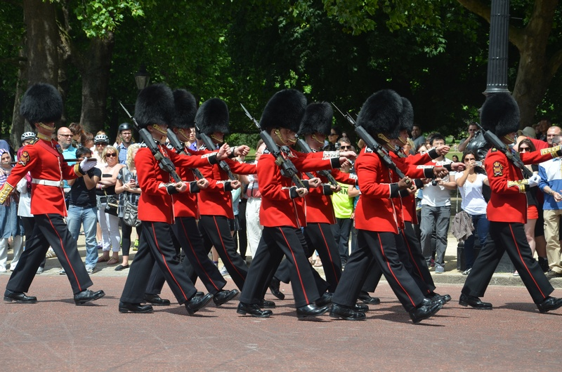
Vojáčci
U Buckinghamského paláce bylo samozřejmě spoustu turistů. Místo je to určitě zajímavé a stojí za návštěvu, ale popravdě tam krom těch vojáčků není nic moc k vidění. Ještě pár fotek v rozkvetlém záhonku a už byl nejvyšší čas, shánět se po nějakém obědě :)…
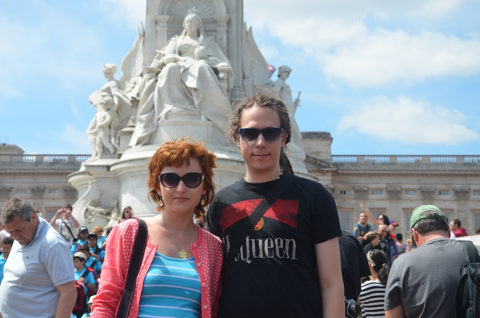
My a královna Viktorie
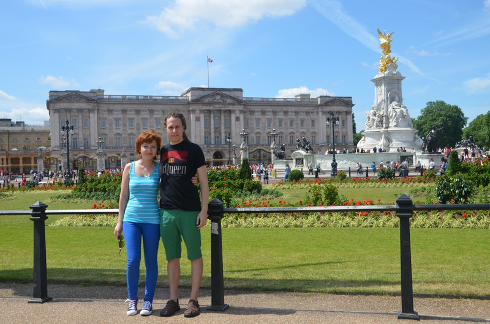
Buckinghamský palác
Protože jsme se nacházeli nedaleko stanice metra Victoria, kde jsme předchozího dne zahájili naše londýnské dobrodružství, řekli jsme si, že to bude i vhodné místo k sehnání něčeho k snědku. Původně jsme měli v plánu koupit si jen nějaký sendvič, ale když jsme objevili fish and chips za necelých 6 liber v místní “nádražce” Victoria Café, neodolali jsme :-).
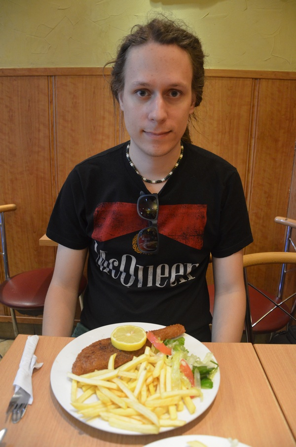
Naše první “fish and chips”
Fish and chips bylo výborné a porce obrovská. Nakonec jsme si dali ještě capuccino, zastavili se v M&S pro něco k pití a vydali se pomalu zpátky k St. James’s Parku, kde jsme se chtěli na chvíli svalit do trávy a dát odpočinout uchozeným nožkám. St. James’s Park, stejně jako další dva nejznámější londýnské parky, které jsme navštívili, je opravdu nádherným a příjemným místem k odpočinku. Tráva je krásně zelená a hebká a můžete si na ni kdekoliv sednout, udělat si piknik nebo se na ní jen tak válet. Všude je čisto, takže jsme nepotřebovali ani deku. Vyvalili jsme se zkrátka na trávu a užívali si krásné počasí, se kterým jsem v Londýně téměř nepočítala.
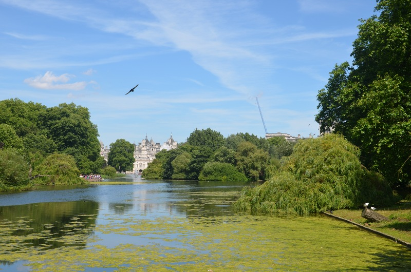
St James’s Park
Po příjemném odpočinku nás čekala cesta ke zlatému hřebu dnešního dne, který na nás po očku vykukoval už po cestě z Trafalgar Square. Prošli jsme po Whitehall kolem Downing Street (přímo ke slavnému č. 10 se bohužel nedostanete - z bezpečnostních důvodů je ulice uzavřena železnou bránou, kterou střeží policie), minuli zastávku metra Westminster a to už se před námi objevil Big Ben v celé své kráse. Stejně jako v případě Eiffelovky, i tady jsem byla překvapená jeho velikostí. Měla jsem za to, že věž je mnohem menší.
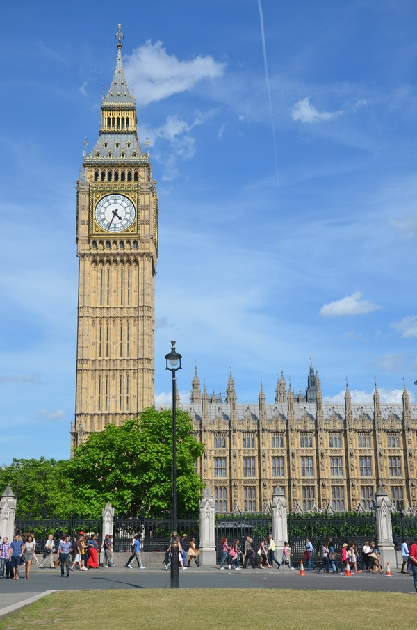
Big Ben
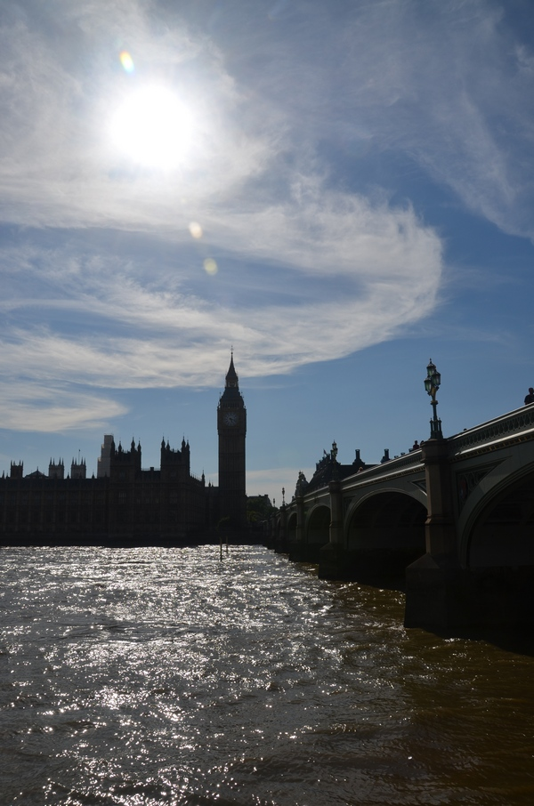
Pohled ze břehu Temže
Přešli jsme Westminster Bridge a dostali se na protější břeh Temže, kde se nachází další londýnská ikona - London Eye. Její návštěvu jsme si ovšem nechali ujít.
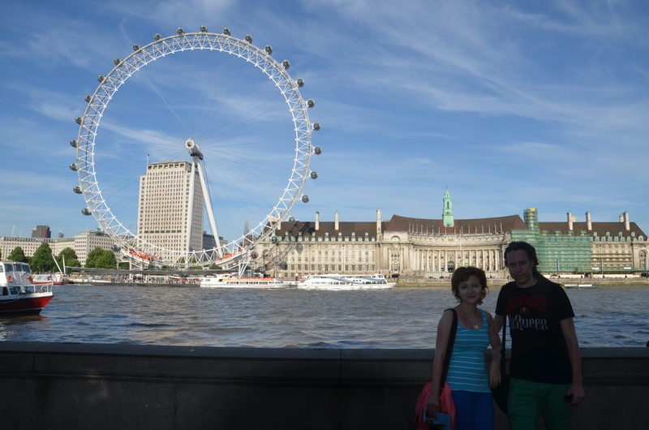
London Eye
V úplném závěru dne jsme se prošli okolo Houses of Parliament a nakonec završili tento památkový okruh návštěvou Westminster Abbey - nejslavnější církevní budovy v Londýně a místa královských korunovací, svateb a pohřbů. Do kaplí jsme se už nedostali, nicméně některé prostory opatství byly i takto pozdě ještě zpřístupněny, a tak jsme si mohli prohlédnout alespoň něco málo z interiéru.
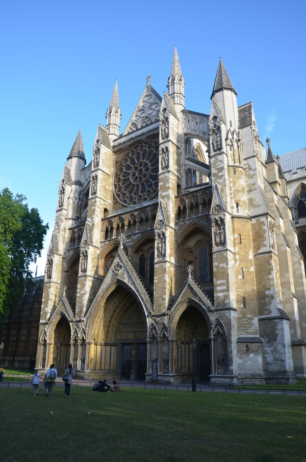
Westminster Abbey
Myslím, že za první den jsme toho stihli docela dost :-). Přitom jsme se nemuseli nikam hnát a našli jsme si čas i na lehárko v parku. Ke štěstí už nám chyběla pouze dobrá večeře. O tu se nám tentokrát postarali v Sainsbury’s. Nakoupili jsme si tam vynikající pomazánky s vajíčkama a kari-kuřetem a také ochucený cider, na který jsme byli velice zvědaví. Popravdě - bylo to dost přeslazené pití (mnohem víc, než třeba Radler) a nějak jsme nezpozorovali, že bychom se z něj opili. Pocity klaustrofobie jsme naštěstí tentokrát nemuseli přebíjet alkoholem - únava z nabitého dne nás nakonec docela snadno a rychle uspala :-).